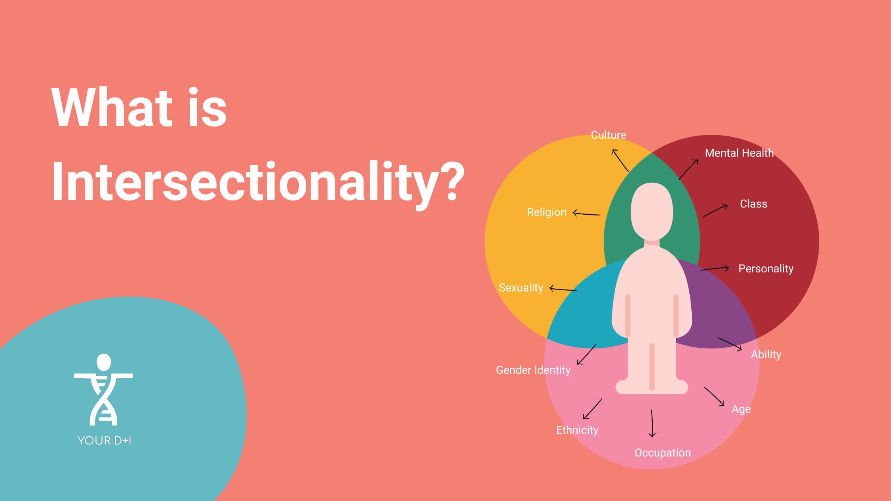

Understanding Bias and Intersectionality
A resource guide for first-year college students exploring implicit bias, intersectionality, and their impact on our lives and society.
What is Implicit Bias?

Implicit bias refers to the attitudes, stereotypes, and associations we hold about different groups of people that operate automatically and unconsciously. Unlike explicit bias (prejudice we're aware of), implicit biases happen without our conscious awareness or intentional control.
These biases develop over a lifetime of exposure to cultural messages, media representations, and social experiences. Even people who consciously reject stereotypes and value equality can harbor implicit biases that contradict their stated beliefs. This doesn't make someone a "bad person."It makes them human, living in a society with a long history of inequality and stereotyping.
Key Characteristics of Implicit Bias:
- Automatic: These associations happen quickly and unconsciously
- Universal: Everyone has implicit biases, regardless of their conscious values
- Malleable: While persistent, implicit biases can be reduced through awareness and practice
- Impactful: They can influence our decisions, behaviors, and interactions in subtle but significant ways
Where Do Implicit Biases Show Up?
Implicit biases can affect many areas of life, including:
- Hiring decisions and workplace evaluations
- Educational settings (teacher expectations, grading, discipline)
- Healthcare (diagnosis, treatment recommendations, pain management)
- Criminal justice (arrest decisions, sentencing, jury deliberations)
- Everyday social interactions and snap judgments
What is Intersectionality?

Intersectionality is a framework for understanding how different aspects of a person's identity; such as race, gender, class, sexuality, disability, and age interact and overlap to shape their unique experiences of privilege and discrimination.
The term was coined by legal scholar Kimberlé Crenshaw in 1989. She observed that Black women faced discrimination that was different from what Black men or white women experienced—it wasn't just racism plus sexism, but a unique form of discrimination that arose from the intersection of these identities.
Why Intersectionality Matters:
Intersectionality teaches us that people's experiences can't be understood by looking at just one aspect of their identity. For example:
- A working-class white woman faces different challenges than an upper-class white woman or a working-class Black woman
- A gay man of color experiences both racism and homophobia, but in ways that are distinct from straight men of color or white gay men
- A disabled person's experience varies significantly based on their race, class, and gender
Intersectionality in Everyday Life:
Understanding intersectionality helps us recognize why a "one-size-fits-all" approach to equity often fails. Different groups need different supports and interventions because their challenges arise from different combinations of systemic barriers. It also helps us avoid creating hierarchies of oppression or assuming that all members of a group have identical experiences.
Reflection on the Implicit Association Test (IAT)
Taking the Implicit Association Test was a challenging and humbling experience. The IAT measures the strength of automatic associations between concepts (like race or gender) and evaluations (like good or bad) or stereotypes (like athletic or intellectual).
What struck me most was how quickly and automatically these associations operate. Even when I consciously tried to override them, the test revealed patterns I wasn't fully aware of. This doesn't mean the results define who I am or predict how I'll behave in every situation, but it does highlight how deeply ingrained societal messages can be.
The experience reinforced several important lessons. First, awareness is the first step toward change, we can't address biases we don't acknowledge. Second, having implicit biases doesn't make someone a bad person, but ignoring them or refusing to work on them can lead to harmful outcomes. Finally, reducing bias requires ongoing effort and practice, not just a one-time realization.
Taking the IAT also made me more compassionate, both toward myself and others. Recognizing that these biases are part of being human in an imperfect society helped me approach the issue with curiosity rather than shame, and commitment rather than defensiveness.
Intersectionality in Technology Design
When AI systems fail, they rarely fail evenly. Facial recognition software developed by major vendors has been shown to misidentify darker-skinned women at error rates up to 34 percentage points higher than for lighter-skinned men, a disparity that Joy Buolamwini and Timnit Gebru documented in their landmark 2018 Gender Shades study. To understand why these gaps persist, it is not enough to blame careless engineers. The more revealing question is an economic one: what incentive structures make this outcome predictable?
The Gender Shades study (Buolamwini & Gebru, 2018) found facial recognition error rates for darker-skinned women were up to 34 percentage points higher than for lighter-skinned men—across products from IBM, Microsoft, and Face+.
Profit-maximization logic offers a partial answer. Bias auditing is costly—it requires diverse evaluation datasets, external review, and engineering time that delays product release. For firms competing in fast-moving markets, these costs are easy to defer, especially when the populations most harmed by errors hold less purchasing power and are therefore less central to the target market. A resume-screening algorithm trained primarily on historically successful employee profiles at a predominantly white firm does not need to be explicitly discriminatory to systematically disadvantage Black and Latina applicants, it simply needs to optimize for a pattern that existing inequality has already shaped. The market, left to itself, has little mechanism to correct this: the firm captures the efficiency gains while the excluded applicants absorb the cost.
Bias auditing is a public good problem: the costs are borne privately by the firm, but the benefits—fairer outcomes—are distributed across society. Without regulation or liability, rational firms consistently underinvest. This is a textbook case of market failure.
This is a classic externality problem. When Amazon's internal recruiting tool downranked résumés that included the word "women's" (as in women's chess club), the economic harm—lost income, foregone career advancement, was distributed outward onto job seekers, not absorbed by the firm. In healthcare AI, similar dynamics emerge: predictive models trained on claims data from commercially insured patients encode the lower healthcare utilization of Black patients not as a sign of fewer needs, but as lower cost—a proxy that then underestimates illness severity and deprioritizes care.
Amazon (2018): An AI recruiting tool penalized résumés mentioning "women's" organizations—quietly scrapped after internal review.
Healthcare AI (Obermeyer et al., 2019): A widely used algorithm systematically underestimated the health needs of Black patients by using healthcare cost as a proxy for need—a variable already distorted by unequal access.
Intersectionality sharpens this analysis considerably. Race and gender alone do not fully predict who bears the greatest algorithmic harm class, geography, immigration status, and disability interact with these axes to produce concentrated vulnerabilities that single-axis analyses miss. A low-income Black woman navigating both a biased hiring algorithm and a healthcare AI that underestimates her pain does not experience these as separate events. She is subject to compounding exclusions that reinforce one another, accumulating economic disadvantage in ways that aggregate statistics obscure. This is not incidental to how technology markets are structured, it reflects them. Data is not neutral; it is a record of who had access, who was counted, and whose behavior was deemed worth studying. Until the incentives to invest in representational equity are built into procurement standards, regulatory frameworks, or liability law, firms will continue to find it rational to externalize these costs onto those least positioned to challenge them.
Algorithmic harms are not simply additive, they are multiplicative. A low-income Black woman facing bias in both hiring and healthcare AI encounters a compounding disadvantage that neither a race-only nor a gender-only analysis would capture. Single-axis fairness metrics mask this by design.
Learn More: Recommended Resources
The following resources provide deeper insights into implicit bias, intersectionality, and related topics. These are academic and educational sources suitable for college-level learning.
Understanding Implicit Bias:
-
Project Implicit - Take the IAT
Harvard's research project offering various Implicit Association Tests you can take yourself
-
American Psychological Association: Implicit Bias
Overview of implicit bias research and its implications from the APA
Learning About Intersectionality:
-
Kimberlé Crenshaw on Intersectionality
Learn about intersectionality from the scholar who coined the term
-
TED Talk: The Urgency of Intersectionality
Kimberlé Crenshaw's influential TED talk explaining intersectionality through real examples
Bias in Technology and AI:
-
Algorithmic Justice League
Research and advocacy organization examining bias in artificial intelligence
-
ProPublica: Machine Bias
Investigative reporting on bias in risk assessment algorithms used in criminal justice
Taking Action
Learning about implicit bias and intersectionality is just the beginning. Here are some ways to continue your growth:
- Practice self-reflection and notice when biases might be influencing your thoughts or decisions
- Seek out diverse perspectives and experiences different from your own
- Challenge stereotypes and biased statements when you encounter them
- Support organizations and initiatives working toward equity and inclusion
- Continue educating yourself through reading, courses, and conversations
Remember: understanding bias and working toward equity is a lifelong journey, not a destination. Be patient with yourself and others, stay curious, and remain committed to growth.